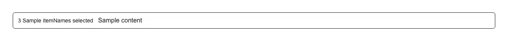

The bar that appears once rows are selected in a table or list — it shows "3 items selected", holds your bulk actions (delete, archive, export, assign, move, approve, mark as read) as children, and gives the user a way out of selection mode. Use it with any multi-select surface: a data table with row checkboxes, an admin users/orders/invoices/subscriptions list, a file manager or media library, an inbox, a moderation or approval queue, a CRM contact list, a photo grid, or a mobile-style edit mode. Common asks it answers: 'bulk action bar', 'bulk actions toolbar', 'selection toolbar', 'batch actions', 'n selected bar', 'contextual action bar', 'what to show when table rows are checked', 'react bulk actions component', 'table row selection toolbar react', 'shadcn data table bulk actions', 'tanstack table selected rows toolbar', 'react-table bulk actions', 'show toolbar when checkbox is selected react', 'select all rows then delete react', 'batch delete ui react', 'bulk edit bar react', 'multi select toolbar react', 'gmail style selection bar', 'floating action bar for selected items', 'sticky bottom bar with selected count', 'how many rows selected component', 'clear selection button react', 'exit selection mode react', 'admin table bulk operations', 'selected count aria live'. shadcn/ui ships no such component — its data-table recipe leaves selected-row UI entirely to you; this packages the part everyone rewrites. It drops straight onto that recipe: pass table.getFilteredSelectedRowModel().rows.length as count and table.resetRowSelection as onClear, and nothing else has to change. It hides itself at count 0, so you render it unconditionally and just pass the selected count. The count is announced to screen readers from a live region that stays mounted even at zero (a live region inserted together with its text is not reliably announced, so a bar that unmounts completely would swallow the first update), and the visible count is aria-hidden to avoid a double read. Escape clears the selection, ignoring already-handled key presses so a dialog opened from one of your actions still closes normally. It is a labelled region, not an ARIA toolbar, because a toolbar is expected to implement roving-tabindex arrow navigation and claiming the role without it reads worse than plain tab order. Pass variant="floating" (default) for a pinned bar above the page bottom or "inline" to sit in the flow above the table; itemName/itemNamePlural handle the noun and irregular plurals, clearLabel renames the exit control, and label names the region itself. Styled with shadcn tokens (background, border, muted-foreground, accent, ring) for automatic light/dark theming, with zero dependencies beyond your cn util. Distinct from toast, which reports a result after the fact; this one hosts the actions themselves.

Rendered on the shadcn default neutral palette with harness-generated props.
pnpm dlx shadcn@4.21.0 add @pulld/bulk-action-bar
| licence | POINTER |
|---|---|
| primitive base | none |
| type | registry:ui |
| files | src/components/ui/bulk-action-bar.tsx |
| npm deps pulled | none beyond the pre-installed peer set |
| registry deps | — |
| semantic / palette / hex | 6 / 0 / 0 |
| writes shared ui/ | yes — can overwrite the project’s own primitives |